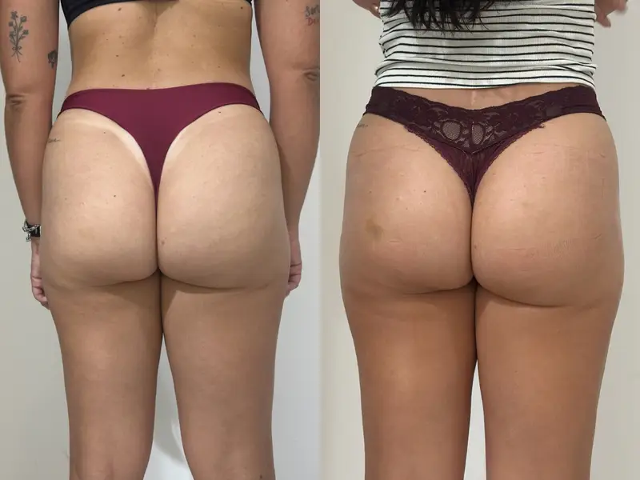
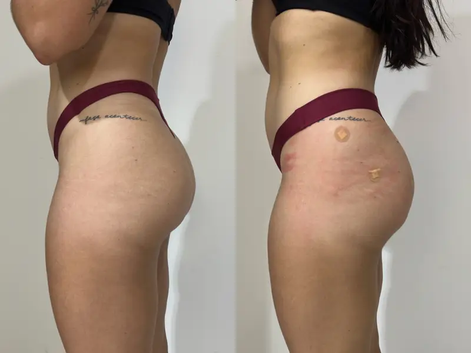
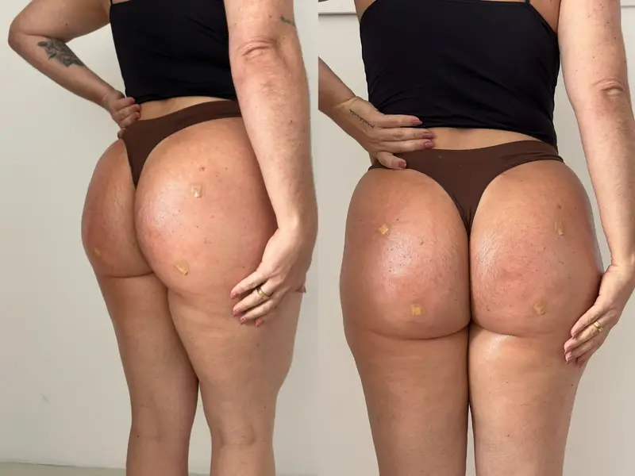
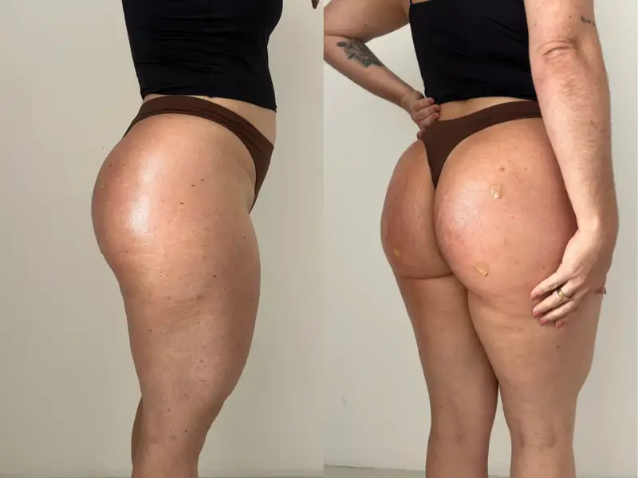
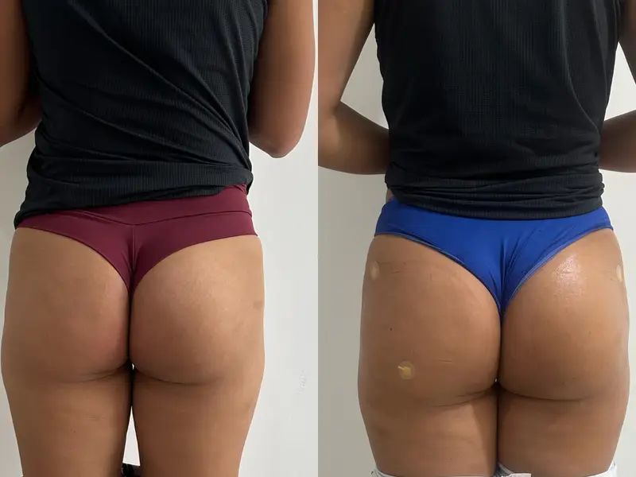

Lipoenzimática
Procedimento voltado ao tratamento de gordura localizada, conforme indicação individual.
Cuidado personalizado para valorizar sua beleza e respeitar sua individualidade.
Agende sua avaliação ↗Da harmonização de glúteos aos cuidados pós-emagrecimento, conheça as possibilidades de atendimento e converse sobre seus objetivos em uma avaliação individual.
Protocolo criado por Karen Dias, com sequências de cuidados voltadas à firmeza, ao contorno, à definição e à textura da pele dos glúteos.
Conhecer o BUMBUMGG ↗Uma proposta de cuidado corporal voltada à gordura localizada e ao contorno, com avaliação das necessidades individuais.
Conhecer o KONTUOR ↗Procedimento voltado ao tratamento de gordura localizada, conforme indicação individual.
Opção de cuidado direcionada ao contorno corporal.
Cuidados voltados à firmeza e à qualidade da pele.
Técnica de cuidado corporal cuja indicação depende da avaliação.
Procedimento voltado à renovação e à textura da pele.
Cuidados direcionados às características da pele e às necessidades de cada pessoa.
As mudanças de peso podem trazer novas necessidades de cuidado com a pele e o contorno corporal. Karen oferece acompanhamento voltado à flacidez pós-emagrecimento, respeitando a fase e as características individuais de cada pessoa.
Agendar avaliação corporalRegistros de tratamentos corporais. Os resultados são individuais e variam conforme as características de cada pessoa e o protocolo indicado.






Sou Karen Dias, esteticista, cosmetóloga, empresária e educadora. Formada em Estética e Cosmética pela UNIFACS, atuo há mais de seis anos unindo conhecimento científico, técnicas avançadas e atendimento humanizado.
Minha trajetória nasceu ao perceber o impacto da estética na autoestima de uma pessoa que amo. Desde então, busco oferecer cuidado individualizado, respeitando a história e os objetivos de cada pessoa.
Tenho especialização em harmonização corporal e injetáveis, com aperfeiçoamentos em microagulhamento, peelings químicos, gerenciamento de pele e tratamento de cicatrizes. Também atuo na assistência estética ao lipedema e ministro cursos de harmonização corporal.
Conheça meu trabalho no Instagram ↗Entendemos seus objetivos e necessidades.
Avaliação da pele, gordura e contorno corporal.
Explicação das possibilidades e limites do tratamento.
Escolha do protocolo conforme a avaliação.
Organização das prioridades e etapas conforme seu objetivo.
A avaliação individual permite conversar sobre objetivos, indicações e cuidados necessários.
Não. Os resultados variam conforme características individuais e o tratamento indicado.
Uma abordagem estética voltada ao contorno, à proporção e à firmeza dos glúteos, conforme avaliação individual.
Entre em contato para consultar valores e condições de atendimento.
A indicação depende da região e das características individuais. A avaliação orienta a escolha do protocolo.
Entre em contato pelo WhatsApp para consultar horários e informações.
Sim, há acompanhamento corporal voltado a essa necessidade, com avaliação individual.
No Matatu, em Salvador. Consulte a localização abaixo.
Centro Empresarial Clima Bom · Rua Barros Falcão, 128, sala 302 · Matatu, Salvador – BA
Atendimento para clientes de Salvador, incluindo Horto Florestal, Brotas, Vila Laura, Luiz Anselmo, Acupe de Brotas, Candeal e Caminho das Árvores.
Conversar pelo WhatsApp ↗